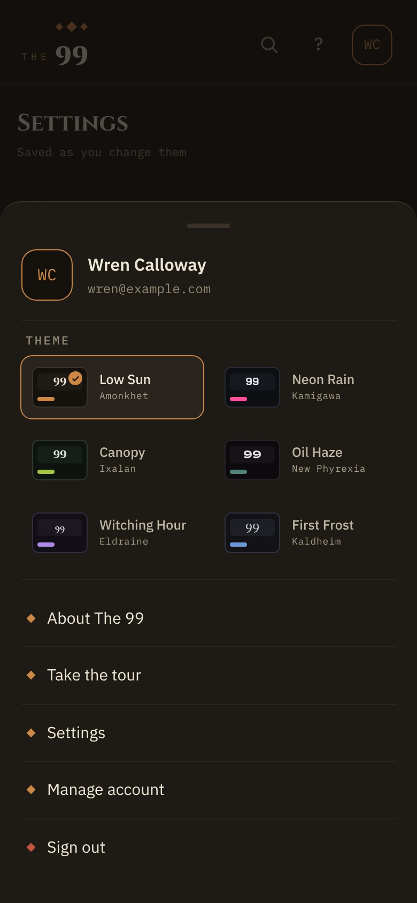
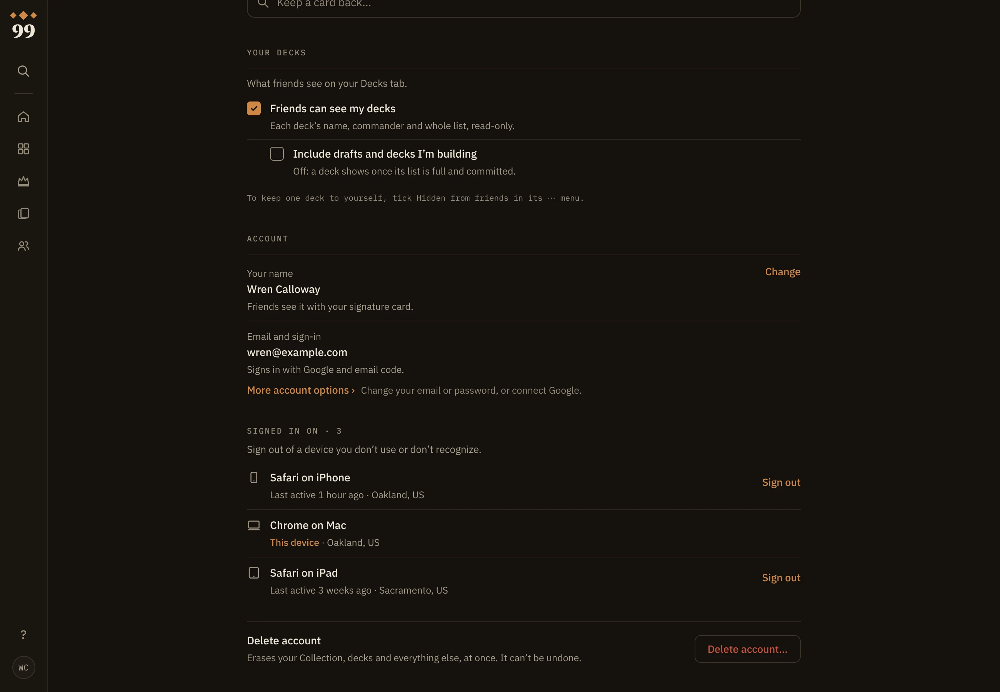
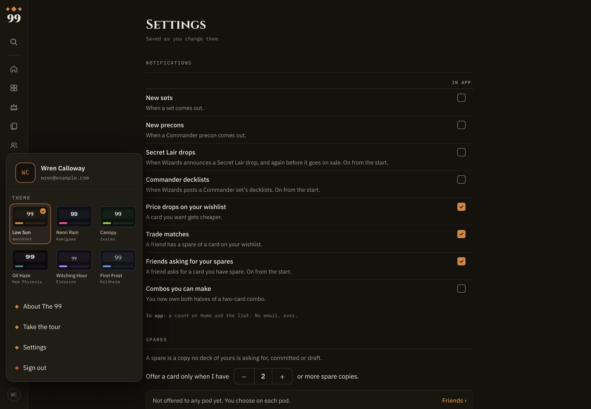

1 · 2 · 3 · 4 · 5 · Account in Settings · R1
Placement: Settings' last section, and the menu
The section sits under Your decks in the same 720 column, at every width one element (only sizes move at md). The menu loses Manage account and keeps Settings in its row.
SETTINGS · ACCOUNT · 390

Your name with Change; Email and sign-in with More account options ›; Signed in on with a Sign out per other device; Delete account with its outline press, full width on the phone.
SHIPPED MENU · 390

Today: Manage account leaves for Clerk's hosted page.
PROPOSED MENU · 390

Four rows. The sheet is otherwise as shipped.
SETTINGS · ACCOUNT · 1300

Change and Sign out sit at the row's right edge (32px tall at md, 44 on the phone). More account options keeps a short line after it at md saying what it reaches.
PROPOSED MENU · POPOVER · 1300

The rail popover without Manage account.
Rows
Your name. A muted label, the name in
--fg 14/500, the line Friends see it with your signature card. DRAFT Change opens the shipped name field in place of the row (next board).Email and sign-in. The primary email and how the account signs in (Signs in with Google and email code., password and email code). It tells a player which step-up D2 will ask for. More account options › calls Clerk's
redirectToUserProfile(), as Manage account does now.Signed in on · N. The Kept back sub-head pattern. Each row: a device glyph (phone, tablet, laptop; stroke 1.6,
--fg-muted), {browser} on {device}, then This device in --accent-text or Last active 2 days ago, then city and country from Clerk's session activity.Delete account. Under its own rule, 22px below the devices. The press is the outline (
--border-strong) with --danger words, 44px full width on the phone, 36px at md. The filled danger press waits for D1, after the word.